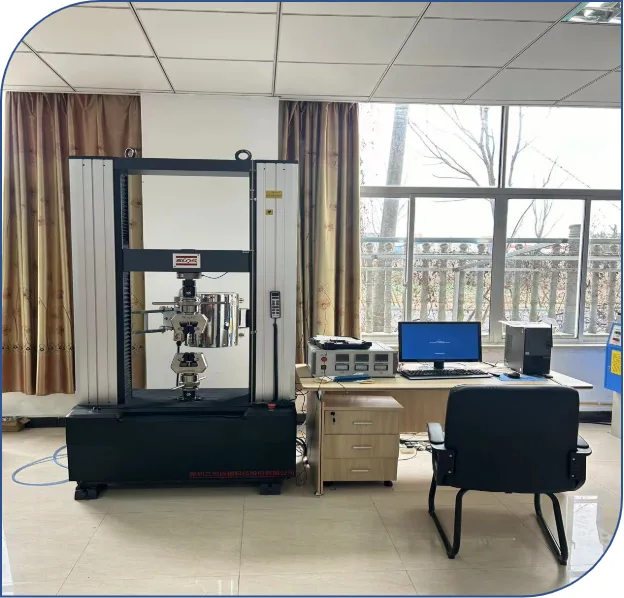

高强度、高纯净度大规格钢制飞轮转子，专为飞轮储能装置设计制造，高周波疲劳 1 千万次试验通过，已批量交付头部厂商。
核心转子件已批量交付国内头部飞轮储能厂商，中心取样高周疲劳 10⁷ 周次 验证通过，为大容量飞轮储能系统的长期高速旋转服役提供数据支撑。
从锻造、调质热处理到精密加工与全流程 UT 探伤，我们以数据说话、检测留痕，让每一件转子都可追溯、可验证。
| 应用领域 | 飞轮储能装置 |
|---|---|
| 疲劳性能 | 高周波疲劳 1 千万次试验通过 |
| 内部质量 | 全流程 UT 超声波探伤 |
| 验证方式 | 中心取样 · 10⁷ 周次 |



高功率密度、长寿命的飞轮储能转子，支撑多类调频与能量回收系统
作为短时高频充放电介质，平抑新能源并网波动，提升电网稳定性。
回收列车制动能量，降低牵引能耗，提升运营经济性。
为数据中心、精密制造提供毫秒级高质量电力支撑。
飞轮转子以高速旋转储存动能，对材料组织致密度、均匀性与疲劳可靠性要求苛刻，锻造是公认的优选成形方式
整体锻造成形消除铸态缺陷，金属流线沿受力方向连续分布，为高速旋转工况提供可靠母材。
关键转子件中心取样，高周波疲劳 1 千万次试验通过，以大样本数据支撑长期高速服役评估。
锻造、调质热处理与精密加工一体化完成，减少转序风险，强度与韧性同步匹配。
从锻造到成品逐工序超声波探伤，缺陷早发现、早处置，批批留痕、报告随货。
每一道工序数据留痕，让每件飞轮储能转子锻件可验证、可追溯
锻件经整体锻造成形，可消除铸态疏松、缩孔与偏析等缺陷，使金属流线沿受力方向分布、组织致密均匀，疲劳强度与可靠性显著优于铸造或拼焊结构，对长期高速旋转的飞轮转子尤为关键。
从原材料复验到成品执行全流程 UT 超声波探伤，关键转子件中心取样并进行高周波疲劳验证，配合化学成分与力学性能检测，批批留痕、可追溯，检测报告随货交付。
可以。支持来图来样定制，按客户需求的规格、材料与验收标准组织锻造、调质热处理与精密加工，特殊要求可在技术评审阶段对接确认。
广泛用于电网调频、轨道交通再生制动能量回收、工业 UPS 与数据中心备用电源等短时高频充放电场景，支撑大容量飞轮储能装置长期高速运转。